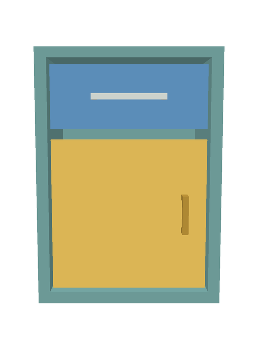
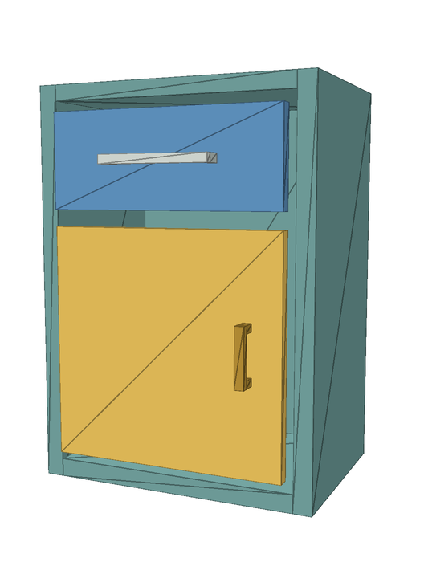
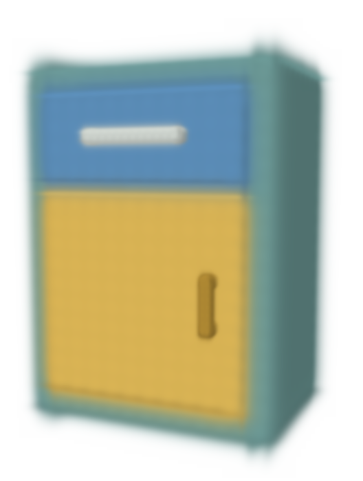
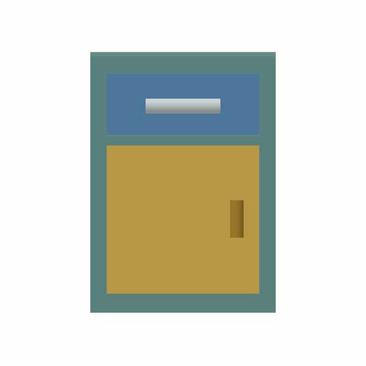
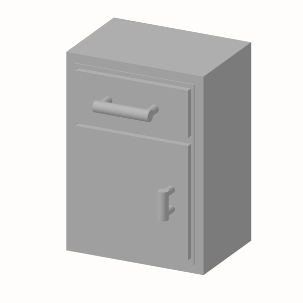
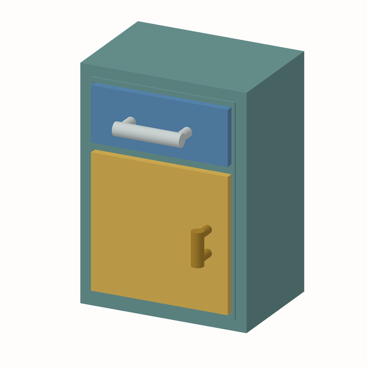

2.11 Generation: TRELLIS and Hunyuan3D
C. Reconstruction and generation · Pretrained 3D generators
A pretrained 3D generator offers another route to a 3D asset, the object’s digital model. Give the system a cabinet image, and it uses knowledge learned from many objects to propose the cabinet’s shape and appearance in 3D.
We follow two examples: TRELLIS creates a shared 3D description that can be decoded into several representations; Hunyuan3D 2.0 creates a mesh, then generates its texture. Both use the shape, appearance, and rendering concepts from Parts A and B.
The routes in 2.9 and 2.10 fit a cabinet’s representation to photographs of that scene. Here, pretrained systems use an input image to guide the creation of a new asset. The examples below refer to the original TRELLIS and Hunyuan3D 2.0 releases.
2.11.1 TRELLIS: generate a 3D asset from one image
TRELLIS is the first generator we examine. Its image-based model takes a cabinet picture and uses knowledge learned during prior training to propose the cabinet’s shape and appearance in 3D. The result can be output as a mesh, 3D Gaussians, or a radiance field. TRELLIS project.
Suppose the input photograph shows the cabinet’s front. It provides little direct evidence about the back or interior. TRELLIS uses patterns learned during training to propose those unseen regions. The result is a plausible asset; hidden details still need inspection if we want to reproduce a particular real cabinet.
TRELLIS creates the asset; its output representation determines how the 3D information is stored. The three options below use the representations introduced in Section 2.1.
Mesh output
Vertices and connected faces describe surfaces. Appearance can be supplied with textures and materials.
Gaussian output
Positions, shapes, opacity, and appearance describe blobs that a Gaussian renderer blends into views.
Radiance field output
Color and density describe the scene at locations in 3D. To make a picture, provide the field and a virtual camera to a compatible volume renderer. It reads color and density along camera rays and combines them into pixels, as in Section 2.7.3.
For the cabinet, choose a camera on its right to render a right-side view. Keep the field unchanged; choose another camera to make another view.
To use a TRELLIS result, choose software that supports its output: a mesh editor or mesh renderer for meshes, a Gaussian viewer or renderer for Gaussians, and a compatible volume renderer for radiance fields. TRELLIS provides a renderer for its own radiance-field output. Its official example uses it to make a video from a sequence of camera views. The field’s saved form can differ from the original NeRF network described in Section 2.10.
2.11.2 TRELLIS: choosing an output for the cabinet
Two of TRELLIS’s output options are a mesh and 3D Gaussians. The cabinet illustrations below show what those representations look like and help explain when each is useful. They are rendered from the book’s scripted cabinet; published TRELLIS predictions are available in the authors’ gallery.

One cabinet picture
A front view is a flat image. It does not show the cabinet’s hidden sides.

Mesh representation
Connected surfaces describe the shape. Lines reveal the triangular faces.

Gaussian representation
Projecting and blending the 3D blobs makes this picture.
Both representations can show color. The mesh and Gaussian views here share a camera and color scheme. The triangle lines help us inspect the mesh; a renderer can hide those lines and use textures and materials to show its appearance.
Using TRELLIS’s mesh output
Suppose we want to use the generated cabinet in a robot-grasping experiment. Choosing TRELLIS’s mesh output gives us surface patches to inspect and edit. We can check the handle’s shape and the gap behind it, then prepare shapes for contact. We can also organize its geometry into parts before adding joints and physical properties.
Using TRELLIS’s Gaussian output
If our immediate goal is to display the asset from new viewpoints, a Gaussian representation supplies colored blobs that can be projected and blended directly. The same rendering operation works for Gaussians produced by TRELLIS or fitted with 3DGS. The choice depends on what we want to do with the result; surface geometry and Gaussian appearance can also be used together. Original 3DGS project.
2.11.3 Hunyuan3D: first shape, then texture
Hunyuan3D 2.0 separates asset creation into two stages: generate the surface shape, then generate its appearance. Its image-based pipeline takes a reference picture and produces a textured mesh. Official architecture overview.

Input: a cabinet picture
The picture guides the proposed shape and colors.

Stage 1: bare mesh
Surfaces define the cabinet’s depth, panels, and raised handles.

Stage 2: add appearance
The mesh receives color and surface patterns through a texture map.
Scripted illustrations of the stages, using the book’s shared cabinet. The gray and colored views have identical geometry; authored surface colors illustrate the appearance stage. Published model results are available in the Hunyuan3D gallery.
Shape generation: where are the surfaces?
The shape model, Hunyuan3D-DiT, uses the cabinet picture to create a mesh. Its surfaces describe the depth of the body, the front of the drawer, and the handle sticking out. At this stage, we can inspect the cabinet’s shape before adding its colors. Shape-generation method.
Texture generation: how do those surfaces look?
Hunyuan3D-Paint receives that mesh together with the reference picture and generates its texture. For the cabinet, this supplies colors such as the blue drawer front and gold door, along with surface patterns shown in the picture. The texture is saved as an image whose regions are placed on the corresponding mesh surfaces. Texture-generation method.
For the cabinet, the texture supplies the blue paint or wood grain; the mesh supplies the handle’s shape. Paint can also texture a mesh prepared in Blender, so an existing model can enter directly at the appearance stage. The official code example shows the mesh and image passed into the texture pipeline.
Use the saved asset
The mesh and its texture can be opened in compatible 3D software. Place a virtual camera in the scene to render a front or side view, as in Section 2.5. Preparing this asset for drawer-opening experiments then involves organizing the movable parts and their joints, introduced in Section 3.2.
2.11.4 Compare the workflows and outputs
Suppose we give each system the same picture of a cabinet with a blue drawer and a gold door. Both use knowledge learned during training to propose a 3D cabinet. We can compare the steps that create it and the kind of 3D data we receive.
Hunyuan3D: build the shape, then add a texture
The first stage creates the cabinet’s mesh: surfaces describe its panels, depth, and raised handles. The second stage uses this mesh and the input picture to generate colors and surface patterns. The result is a mesh with a texture, ready to open in compatible 3D software and render from a chosen camera.
TRELLIS: build a shared description, then choose an output
TRELLIS first proposes where to place information about the cabinet’s surfaces in 3D space. It then generates a numerical description of the shape and appearance around those locations—for example, the shape of the drawer front and its blue color. This description is an intermediate result used inside the system.
TRELLIS can convert that shared description into several output representations: a mesh with connected surfaces, 3D Gaussians made of colored blobs, or a radiance field that supplies color and density. These are the forms introduced in Part A. For example, choose a mesh to edit the handle’s surface in a mesh editor, or Gaussians to view the cabinet with a Gaussian renderer. TRELLIS outputs.
From a cabinet picture
Compare what each stage creates and what can be saved.
| What to compare | Hunyuan3D 2.0 | TRELLIS |
|---|---|---|
| How the cabinet is created | Create the surface mesh, then generate its texture. | Choose locations in 3D, describe shape and appearance there, then convert that description into an output. |
| What we receive | A mesh with a texture. | A mesh, 3D Gaussians, or a radiance field. |
Further reading: internal codes and texture generation
TRELLIS terminology. The selected locations are cells in a sparse 3D grid. The numbers generated at each location are feature codes. Locations and codes together form the structured latent representation (SLAT). A decoder is the learned component that converts this internal description into a particular output representation. The TRELLIS paper explains the two generation stages.
Hunyuan3D shape and texture. The shape model generates a compact numerical description that is decoded into a mesh. For texture generation, the pipeline renders geometric information from several viewpoints; Paint uses it with the reference image to generate colored views. Transferring those colors onto a texture map is called texture baking. See the paper’s shape method and texture method.
Exporting a textured mesh from TRELLIS. Its GLB export can transfer appearance from the generated Gaussians onto the generated mesh. The official export notes describe this step. For Hunyuan3D, the code examples show how to use the shape and Paint models.